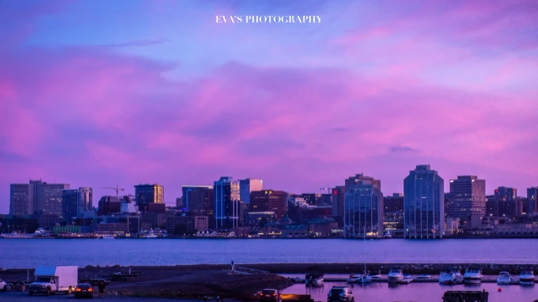

CHAPTER 01 / INTRODUCTION
概述
这是向大家种草🌿为目的的🇨🇦加拿大 海洋三省景点合集，给大家介绍的是🇨🇦加拿大 名气不大但拥有着丰富旅游资源的海洋省份景点，NS 新斯科舍 省，NB 新不伦瑞克省，PEI 爱德华王子岛 ～（ps：纽芬兰岛 拉布拉多省日后会另开游记单独介绍～）
关于我，在2014年9月来到这个陌生的国土，开始了留学生涯，在工商管理硕士毕业🎓之后，因为对旅游的喜爱而踏进了旅游业，成为一名当地导游。有过迷茫，但在旅途中找寻自我，梦想着走遍世界的平凡女生。
因为居住在🇨🇦新斯科舍省的 哈利法克斯，大部分的景点，都是重复前往，所以游记内容不会涉及每天规划、地方美食、住宿攻略，但如果有任何的疑惑，欢迎留言哟！日后也会继续补充这部分的内容～没有华丽的语言，只有真诚分享～希望大家喜欢，附上在 哈利法克斯 的黄昏🌇。



原图与署名说明：本章文字和图片来自你提供的「图1」。照片中的 EVA’S PHOTOGRAPHY 水印已原样保留，地点说明为 Halifax Waterfront Boardwalk。查看图1原始截图 ↗。转载与公开展示授权尚待核实。